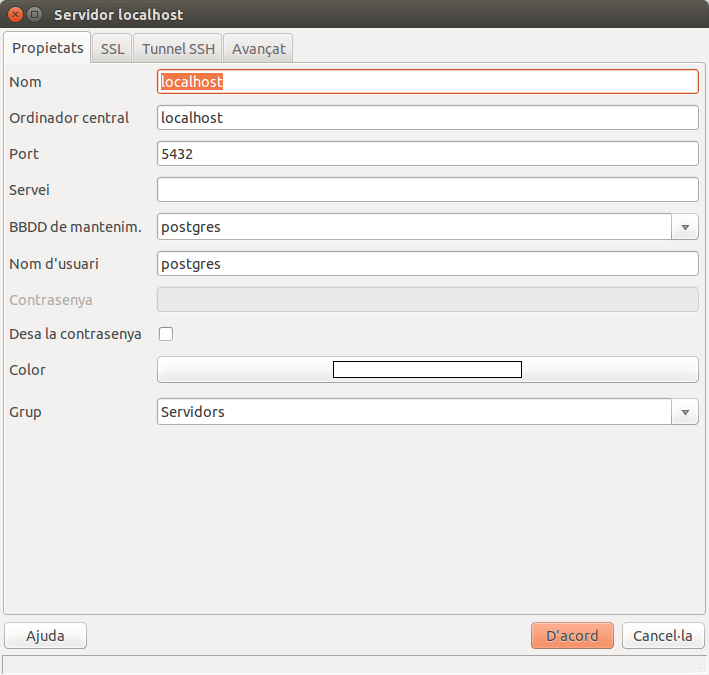
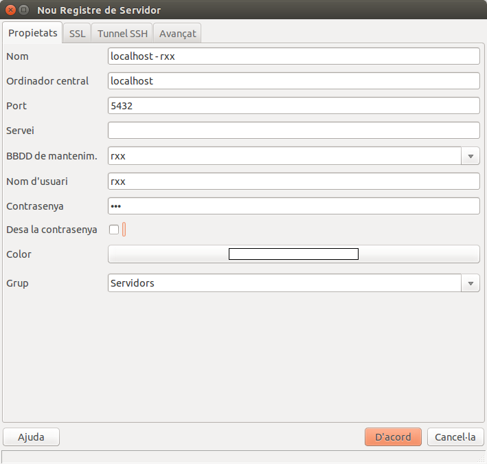
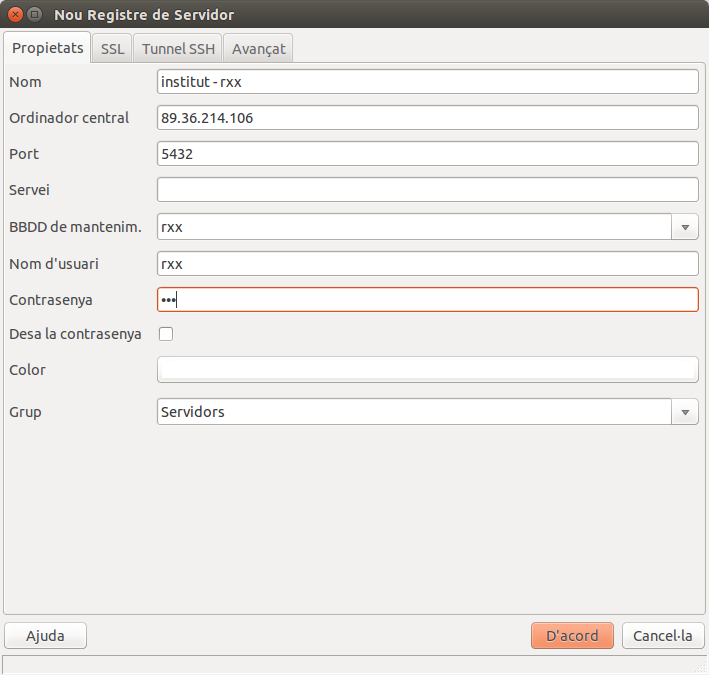

2 - Bases de Dades Objecte-Relacionals
Com s'ha comentat en el punt anterior, les Bases de Dades Objecte-Relacionals (SGBDOR, o ORDBMS en anglès) són Sistemes Gestors de Bases de Dades Relacionals que incorporen conceptes d'objectes per a poder donar servei a la programació orientada a objectes, que cada vegada s'està imposant més. D'aquesta manera podrem guardar objectes (o una cosa semblant) en les taules.
Com hem comentat en temes anteriors, les Bases de Dades Relacionals continuen utilitzant-se de forma massiva, per la seua solvència i robustesa. No obstant això, les més avançades intenten incorporar els objectes en els tipus de dades, de manera que els programes fets en Programació Orientada a Objectes (POO) ho tenen més fàcil per continuar utilitzant-les. És el cas per exemple dels SGBD Oracle, Informix o PostgreSQL.
En aquestos apunts utilitzarem PostgreSQL, per a poder donar continuïtat al SGBD utilitzat en el mòdul de Bases de Dades, de primer de DAM. Només volem connectar-nos com a clients, això sí, com a usuaris diferents, per a poder crear cadascú els seus objectes sense interferències d'uns als altres. D'aquesta manera se'ns plantegen dues possibilitats:
- Instal·lar el servidor PostgreSQL per a no interferir amb ningú,
- No instal·lar el servidor, i utilitzar un usuari i Bases de Dades diferent per a no interferir (el professor us en proporcionarà un).
Tant en un cas com en l'altre, en principi tindríem prou com a clients amb la perspectiva Database Development d'Eclipse, connectant-nos a la Base e Dades i usuari propis. Podrem consultar les coses que hi ha i també executar sentències SQL. Tanmateix, per a més comoditat i control sobre la Base de Dades de PostgreSQL, utilitzarem el pgAdmin III, el client més utilitzat de PostgreSQL.
Si voleu instal·lar-vos el servidor PostgreSQL:
En cas que vulgueu instal·lar-vos el vostre propi servidor PostgreSQL en el vostre equip, per a no tenir interferències de ningú.
Com a guia d'instal·lació i utilització de PostgreSQL, teniu uns apunts en l'últim tema, el dels annexos. Concretament, els punts que més interessaran seran:
-
- 2.2 Instal·lació automàtica en Windows
- 3.2 PgAdmin III, que és el programa que utilitzarem per a crear usuaris, crear Bases de Dades i per a fer consultes.
- 6.1 Gestió de rols: utilització com a usuaris, per a poder crear usuaris
- 6.4 Autenticació d'usuaris, per a poder connectar des del client (des de Java, en el nostre cas)
- 7.1 Bases de Dades: Creació, Modificació i Eliminació, per crear Bases de Dades
Si heu instal·lat PostgreSQL en una màquina virtual, per a connectar des de qualsevol client, haurem de saber l'adreça IP d'aquesta màquina virtual. En canvi si heu instal·lat PostgreSQL en la màquina real, els accessos des del client (pgAdmin III i des de Java) es faran al localhost.
L'objectiu final serà accedir des de Java, però per a poder fer proves ens faria falta algun programa per accedir directament a PostgreSQL, veure els usuaris, veure directament les taules, i provar sentències SQL. El més còmode serà PgAdmin III (com s'ha comentat més amunt). Per a veure com s'utilitza, podeu consultar els apunts abans esmentats (pregunta 3.2). Però recordeu que únicament l'utilitzarem per a accedir de forma còmoda i poder fer proves ràpidament.
Haureu de crear-vos una connexió com al superusuari postgres , amb la contrasenya proporcionada en el moment de la instal·lació

A continuació haureu de crear un usuari per a fer les pràctiques del tema. Li podeu posar el nom rxx, amb contrasenya rxx. Posteriorment haureu de crear la Base de Dades rxx, el propietari de la qual ha de ser rxx.
Per últim, us aniria bé una connexió com a usuari rxx a la BD rxx. Aquesta és la que hauríeu d'utilitzar per a fer les pràctiques del tema.

Si NO voleu instal·lar-vos el servidor PostgreSQL:
Utilitzarem com a mínim el programa PgAdmin III, que ens permet connectar de forma còmoda amb el servidor. En els apunts penjats al final, en la secció d'annexos, teniu la manera d'instal·lar PgAdmin III, en la pregunta 2.5, tant per a Windows comper a Ubuntu. Són versions endarrerides, però la manera de funcionar serà la mateixa.
Posteriorment ens haurem de crear una connexió amb el servidor (adreça 89.36.214.106) a la Base de Dades i usuari que us especificarà el professor. En la imatge teniu un exemple, però reordeu que heu de canviar rxx per l'usuari i BD que us dirà el professor

Llicenciat sota la Llicència Creative Commons Reconeixement NoComercial CompartirIgual 2.5